Dmytro Kuzmenko
Hi there!
As a Data Science Engineering Manager at LITSLINK, I lead a diverse team of 23 ML engineers across Computer Vision, NLP, Audio, and Generative AI domains. Our work involves architecting and deploying complex machine learning pipelines that drive significant performance improvements for a variety of clients and use cases.
My PhD research at National University of Kyiv-Mohyla Academy focuses on Robotics and Reinforcement Learning, specifically exploring cross-embodiment and sim-to-real transfer for robotic mobile manipulation tasks. This work aims to bridge the gap between simulation and real-world applications, enhancing efficiency and accuracy in embodied AI.
At NaUKMA and SET University, I teach advanced courses in Computer Vision, Machine Learning, NLP, and Reinforcement Learning to undergraduate and graduate students. My goal is to nurture the next generation of AI talent in Ukraine, providing them with practical skills and theoretical knowledge needed in the rapidly evolving field of AI.
I'm actively involved in the AI community, frequently speaking at conferences and events on topics ranging from applied machine learning to cutting-edge research in robotics. I'm committed to contributing to and growing the Ukrainian AI ecosystem through mentorship, public speaking, and collaborative research initiatives.
You can find the recordings of my courses, lectures, events, and talks here:
Recent News
- 2024-07: I have helped talented teams develop their ideas during a 4-day AI House Startup Camp as a mentor!
- 2024-07: I have presented my research and poster at Toronto Robotics Conference 2024!!
- 2024-07: My first single-author zero-shot robotic goal navigation paper got accepted at ICTERI 2024 Poster track!
- 2024-07: Partaken in "Summer School on Artificial Intelligence & Creativity" in Bologna, Italy!
- 2024-07: I have been invited as a panel discussion speaker at "From Junior to Senior: How to Build an Effective IT Career" meetup!
- 2024-06: I have published a preprint of my robotic goal navigation pre-peer-reviewed manuscript on arXiv!
- 2024-03: I started teaching a "Machine Learning" master's course at Set University!
- 2024-02: Our StairNet comprehensive overview has been accepted and published in the special issue of BioMedical Engineering OnLine journal!
- 2023-12: Our IROS conference manuscript was added to IEEE Xplore!
- 2023-10: I started my PhD in Computer Science at NaUKMA! I will be working on Time-efficient Reinforcement Learning in Robotics under the supervision of Dr. Nadiya Shvai.
Highlights

|
Joined AI House Startup Camp 2024 as a mentor!
25-28 Jul 2024
A 4-day long productive engagement with 9 teams that were working on creating and improving their own ideas.
|
| 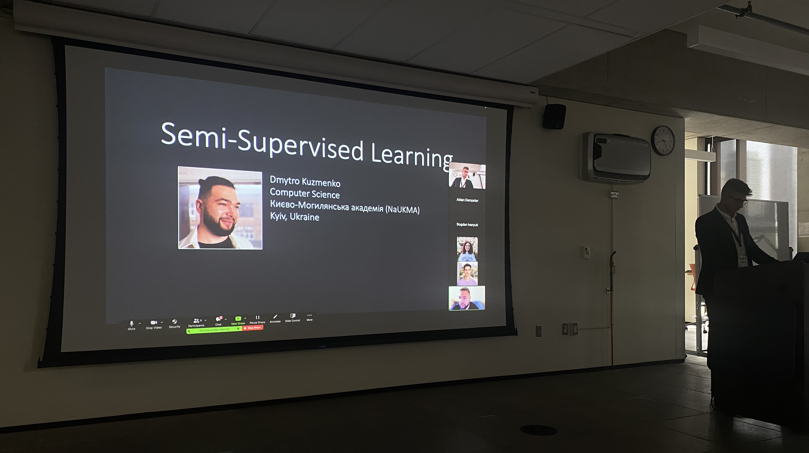 |
Gave a talk at Toronto Robotics Conference 2024!
23 Jul 2024
I have held a short talk on my SSL research for human-robot locomotion at Toronto Robotics Conference 2024!
|

|
Had an amazing week at Una Europa Summer School in Italy, covering topics like LLMs, AI regulation, and humor in AI. I am joyed to have met so many wonderful PhD students from around the world!
|
| 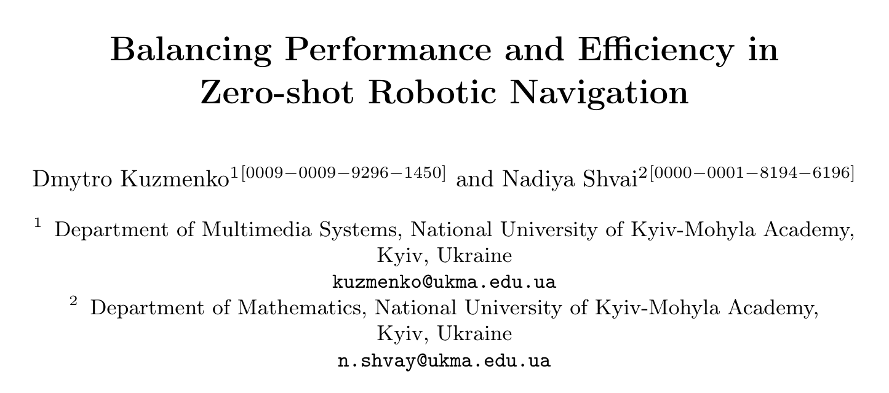 |
This is my first single-author work focused on optimizing resources in zero-shot Habitat-Matterport 3D object goal navigation in robotics. Submitted to ICTERI 2024 Posters Track.
|
| 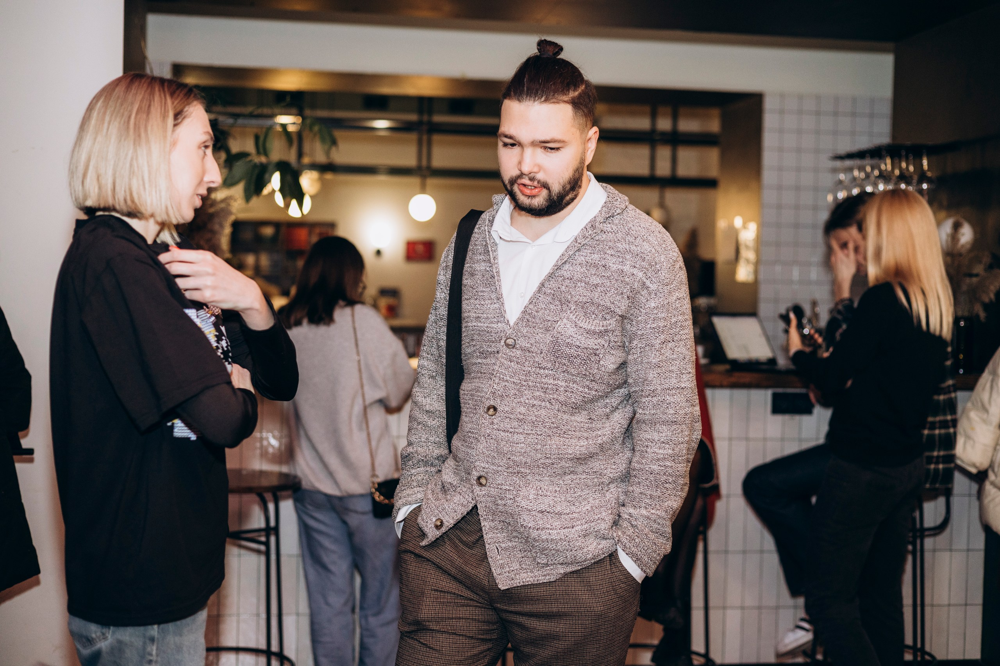 |
Teaching a course of Machine Learning in one of the master's programs!
|
| 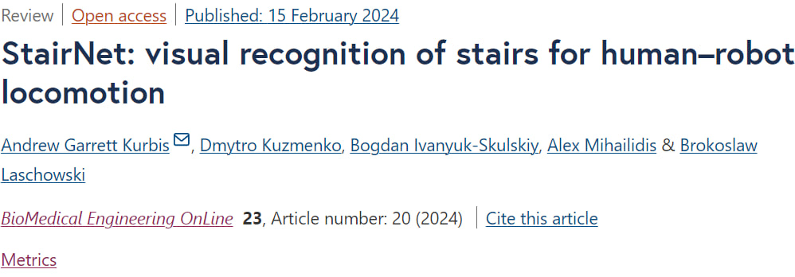 |
Our StairNet comprehensive overview has been accepted and published in the special issue of BioMedical Engineering OnLine journal!
|
| 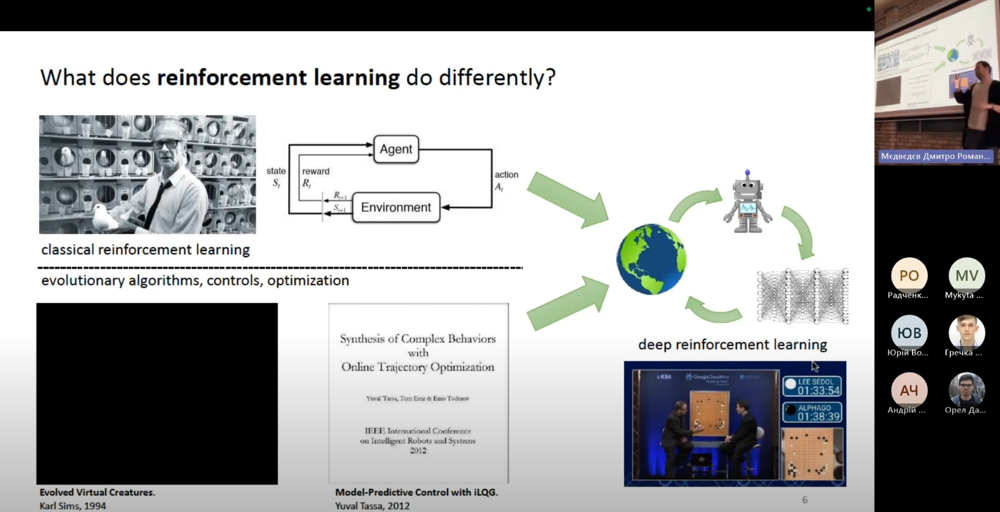 |
Offline intro lecture on Deep RL at NaUKMA
27 Jan 2024
Hosted by AI House, Bomberland-centered RL Competition is an event for students of different Ukrainian universities to practice and hone their skills in Reinforcement Learning.
|
| 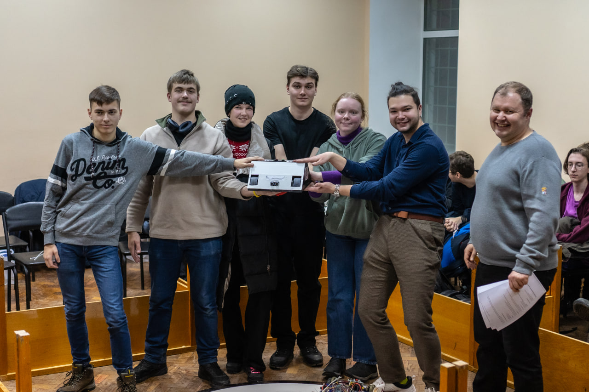 |
6 teams, more than 40 participants, development and construction of a robot to participate in the arena fights. Shoutout to the team I mentored for taking the 3rd place!
|
| 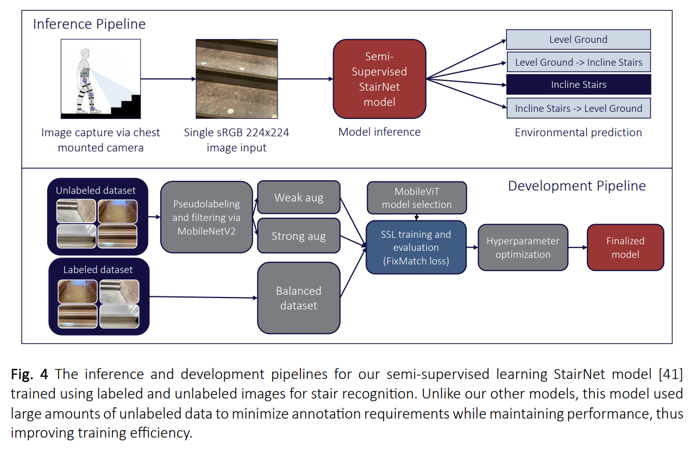 |
StairNet preprint for the special issue of BioMedical Engineering OnLine journal published!
31 Oct 2023
"StairNet: Visual Recognition of Stairs for Human-Robot Locomotion", BioMedical Engineering OnLine.
|
| 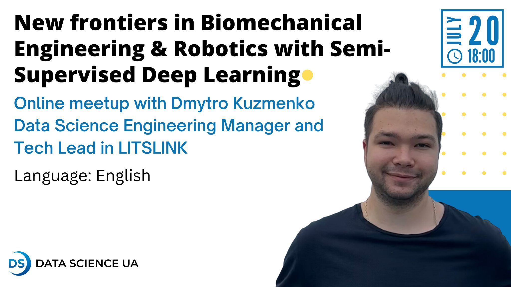 |
"New frontiers in Biomechanical Engineering & Robotics with Semi-Supervised Deep Learning", at Data Science UA.
|
| 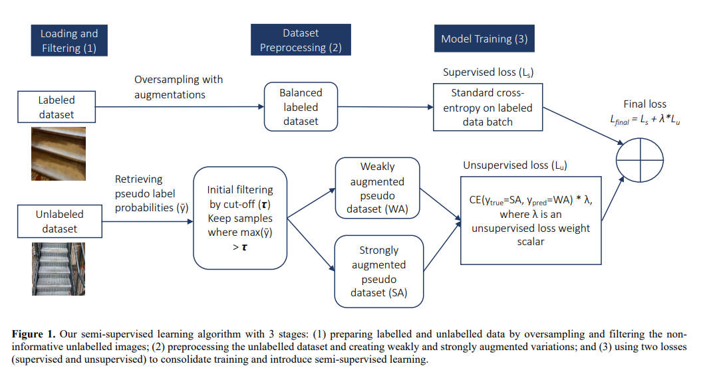 |
"Efficient Visual Perception of Human-Robot Walking Environments using Semi-Supervised Learning", IROS 2023.
|
| 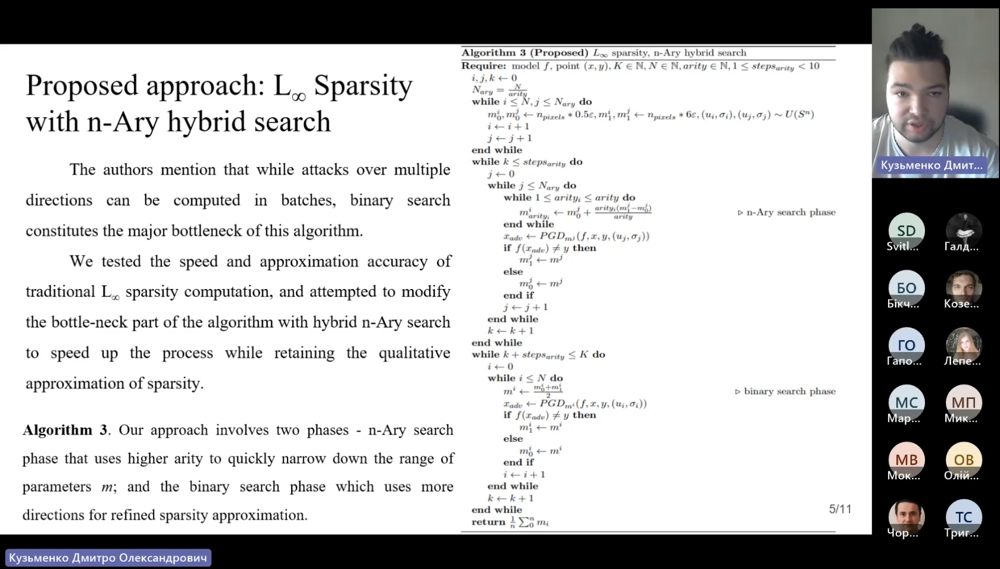 |
"Impact of adversarial sparsity as an auxilliary metric in adversarial robustness". Adversarial robustness, adversarial sparsity, L-inf sparsity, novel n-Ary hybrid search.
|
| 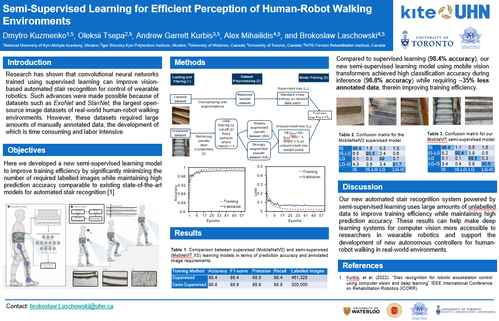 |
Our poster got accepted at ICAIR 2023!
3 Apr 2023
Semi-Supervised Learning for Efficient Perception of Human-Robot Walking Environments.
|
| 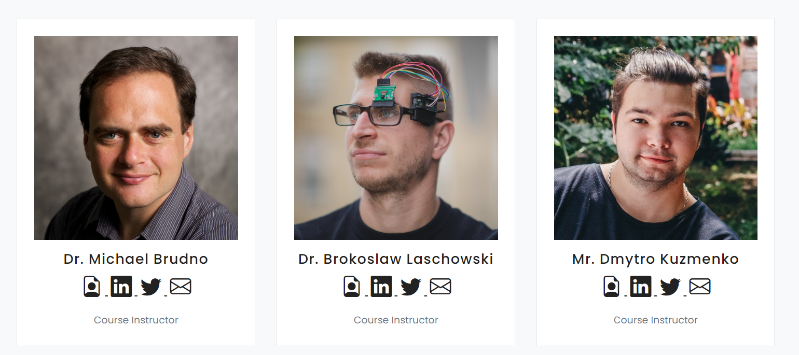 |
The course is a first attempt to bridge cross-university and cross-country research by aligning talented senior undergrads from Ukraine (NaUKMA and UCU) to contribute to the research of PhD students at University of Toronto.
|